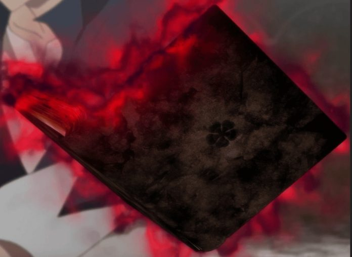

Reino Clover e A Lenda do Grimório de 5 Folhas
O Reino de Clover é um lugar onde a magia é tudo. Aqui, Asta nasceu sem nenhum poder mágico, mas com o coração cheio de determinação.
Este Reino fica dividido em três regiões principais:
Região Esquecida: Área mais distante e pobre, na fronteira com outros domínios, onde fica a vila de Hage (vilarejo em que Asta cresceu).
Região Comum: Zona intermediária onde vive a classe média e plebeus.
Região Nobre e Capital: Centro do reino, habitado pela realeza, nobres ricos e magos poderosos.

Em um mundo onde a magia é tudo, Asta nasceu sem nenhum poder mágico. Para provar sua força e cumprir uma promessa feita a seu amigo Yuno, ele busca se tornar o Rei Mago!
Nas três folhas do trevo reside a honestidade, a esperança e o amor. Na quarta folha reside a boa fortuna. E na quinta folha... reside um demônio.
